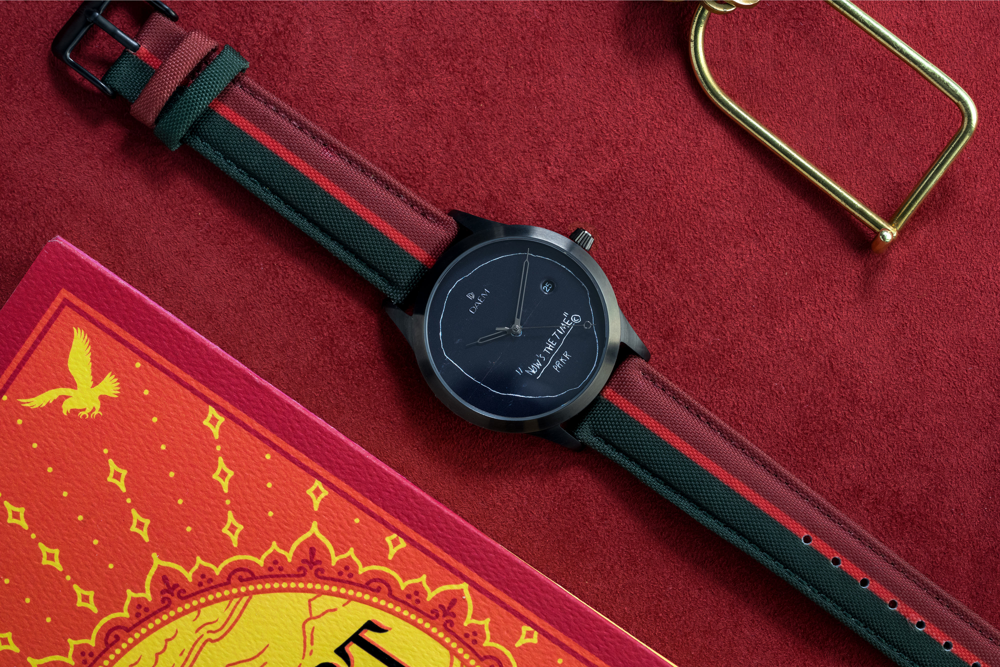
Basquiat x DAEMCultural Partnership, PR

Basquiat x DAEMCultural Partnership, PR
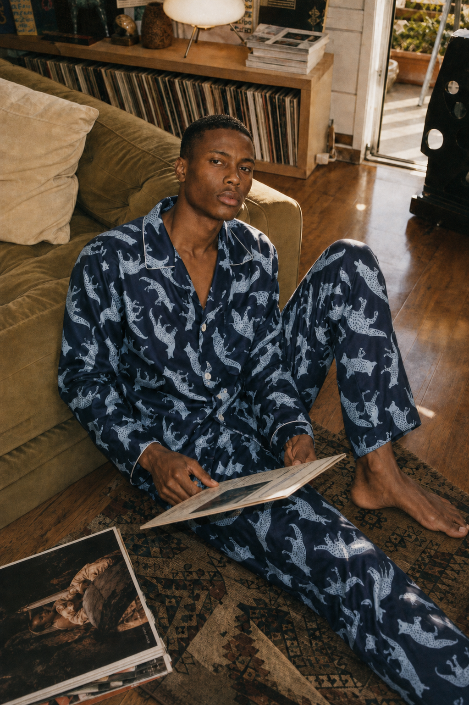
Fred SegalProduct & Campaign Strategy
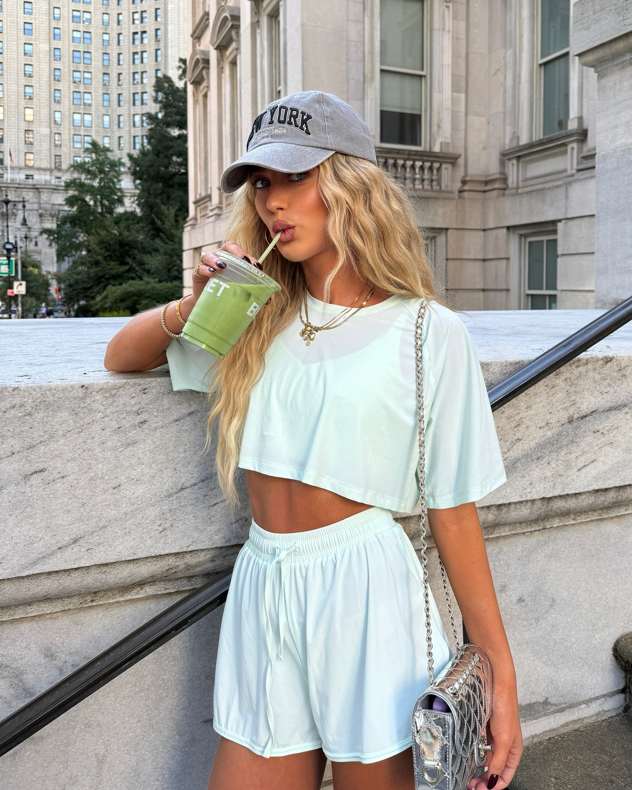
PHYZIKA — @emilisindlevBrand Strategy, Partnerships
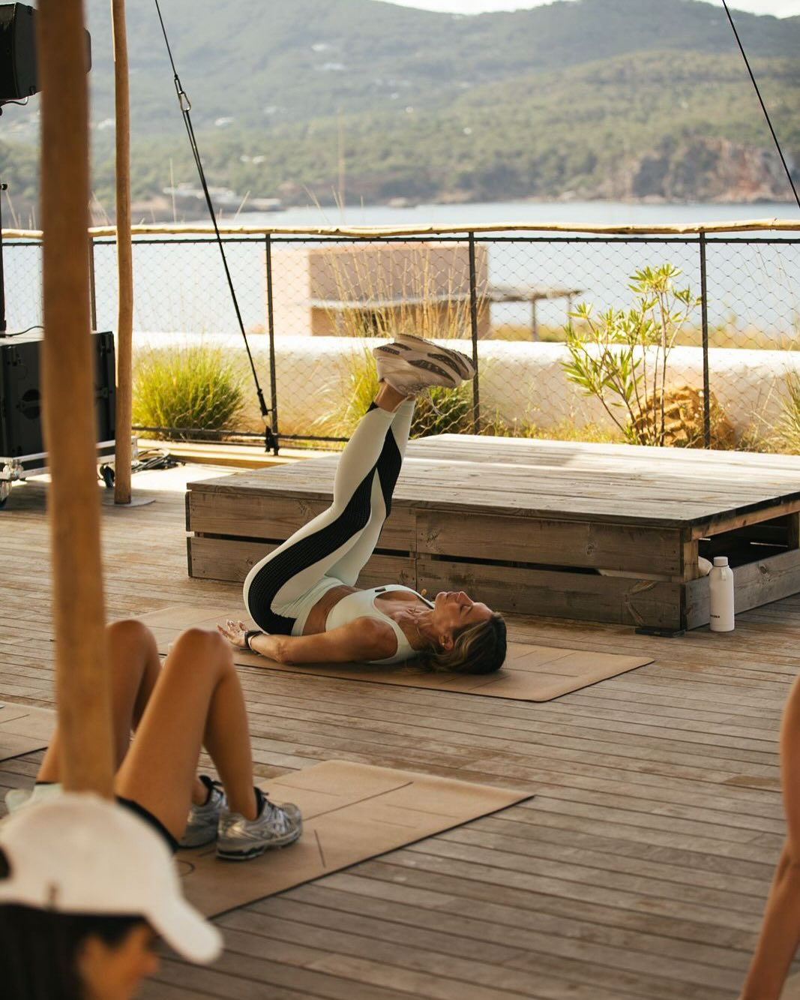
PHYZIKA — Kim StrotherAlma Festival, Ibiza
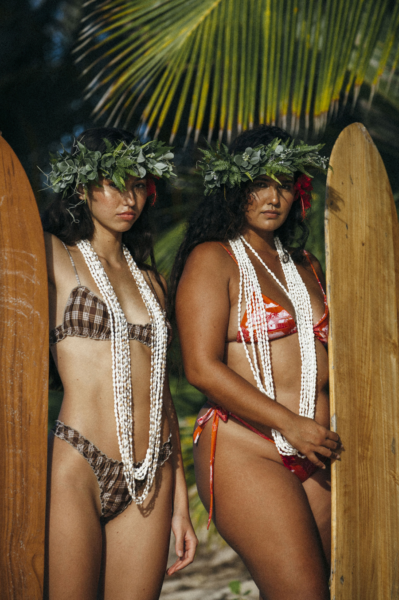
High Noon Swim by @GypsyoneInfluencer Brand Development
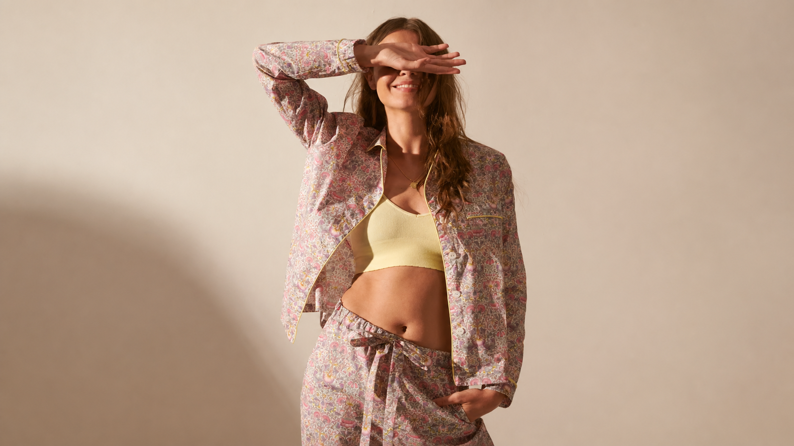
Liberty London × AnthropologieU.S. Audience Expansion
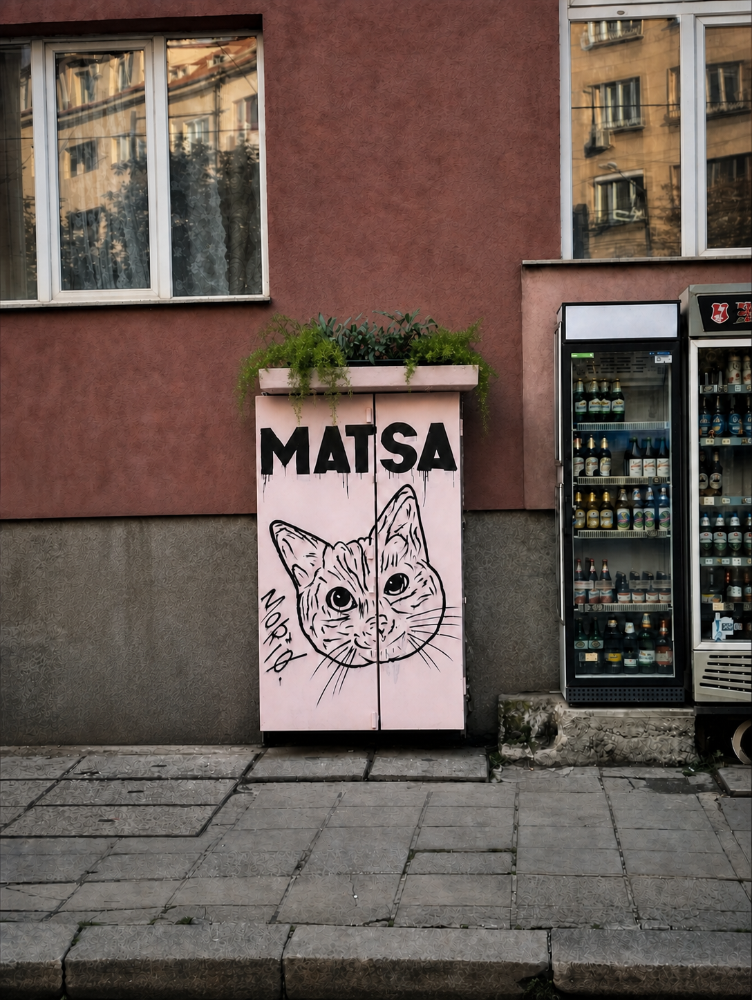
Matsa Klek Cafe — ClosedCultural Hospitality Marketing
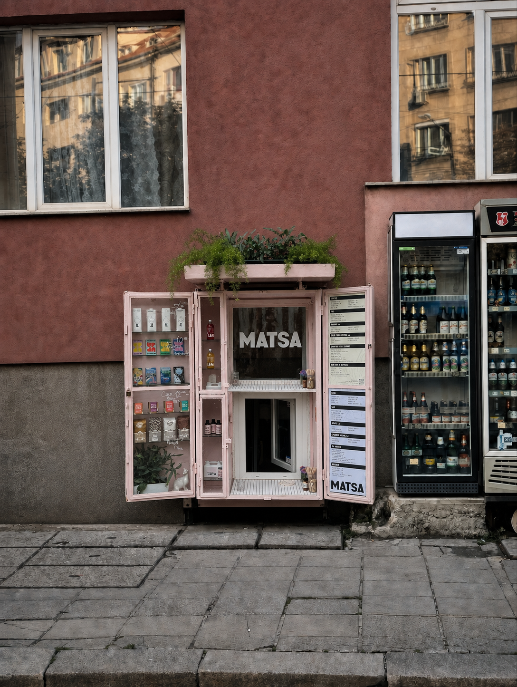
Matsa Klek Cafe — OpenCultural Hospitality Marketing
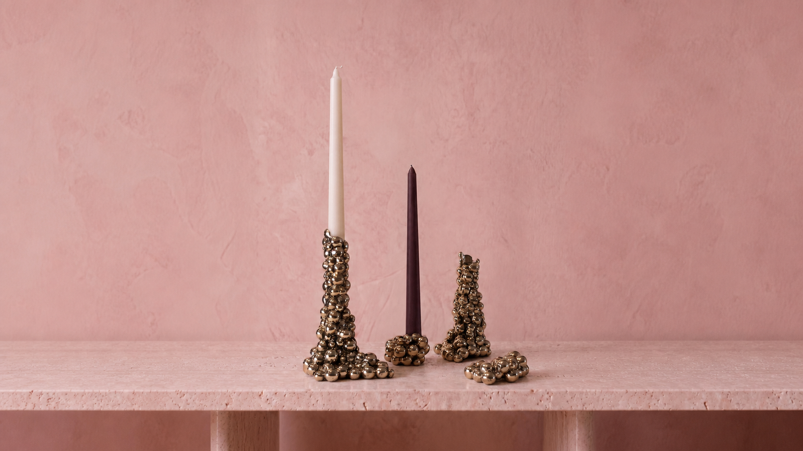
Aesa JewelryAI Campaign, Creative Direction

Aesa Jewelry — DetailAI Campaign, Creative Direction

Kuma LisaSocial Content & Community
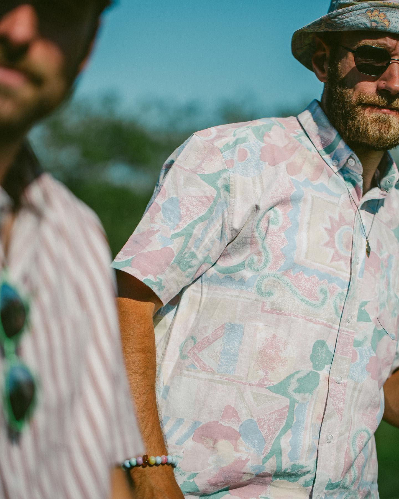
Pleasant UpcycledSustainable Product, Brand Strategy
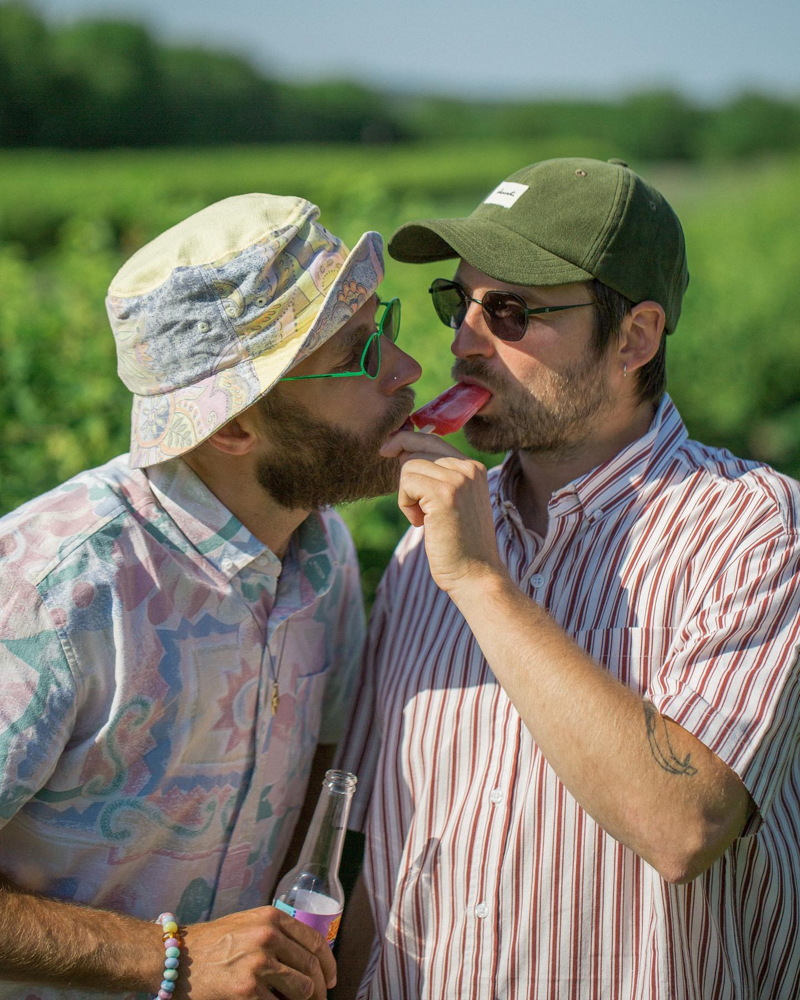
Pleasant Upcycled — SummerSustainable Product, Brand Strategy
Drag or scroll to explore →
Cultural Partnership, PR
Developed and executed a cultural partnership between the Estate of Jean-Michel Basquiat and luxury watch brand DAEM. Extended the collaboration through strategic relationships with The Webster, Hypebeast, and Essence, strengthening its relevance across luxury, fashion, and streetwear audiences.
Product & Campaign Strategy
Conceptualized a silk sleepwear collection for Fred Segal’s private label, identifying an opportunity to expand its offering during the shift toward at-home living. Developed the product direction and campaign platform around rest, ritual, and modern wellness, helping turn a cultural moment into a new commercial category for the brand.
Brand Strategy, Partnerships
Supported PHYZIKA’s brand marketing through strategic retail placements, partnerships, and audience-development concepts rooted in wellness and movement. Built relationships with aligned stores and studios, supported the brand’s presence at Agora at Six Senses Ibiza, secured a Marie Claire Serbia interview, and facilitated visibility with @emilisindlev.
Influencer Brand Development
Developed a creator-led swimwear brand with Jenah Yamamoto, translating her audience, personal style, and cultural influence into a direct-to-consumer concept. Managed the project from initial positioning through product development, production timelines, visual direction, and launch execution.
U.S. Audience Expansion & Brand Positioning
Developed and executed a strategic collaboration between Liberty London and Anthropologie UK. Used Liberty’s design heritage and Anthropologie’s retail platform to create a shared campaign narrative, engage a younger customer, and strengthen Liberty’s visibility and accessibility in the U.S. market.
Cultural Hospitality Marketing
Created a hospitality concept that reimagined Sofia’s traditional klek shops through a contemporary cultural lens. Collaborated with the Graffiti Association of Sofia on custom storefront artwork, shaped the brand positioning and customer experience, and directed the social media strategy. The concept was also featured by Wizz Air, extending its visibility to a broader international audience.
AI Campaign, Creative Direction
Led the creative direction for an AI-driven campaign for Aesa Jewelry, developed in collaboration with Aesa Digital. Used AI-assisted visual experimentation to explore multiple creative territories, refine the campaign concept, and establish a distinctive visual language that could work consistently across digital content and campaign touchpoints.
Social Content & Community
Directed Kuma Lisa’s Instagram presence through ongoing content planning, creative direction, publishing, and brand storytelling. Organized pop-up experiences that brought the online community into physical spaces, supported organic audience growth, and strengthened the relationship between the brand and its followers.
Sustainable Product, Brand Strategy
Developed a sustainability-led collaboration with Danish brand Pleasant using reclaimed materials such as secondhand bedding and curtains. Helped shape the product concept, secured manufacturer support, and developed distinctive pieces for launch through Urban Outfitters and select boutiques across the U.S. and Europe.
About
Alex Atanas is a marketing strategist focused on campaign development, audience growth, strategic partnerships, and digital content. She helps brands connect with people in human, culturally relevant ways.